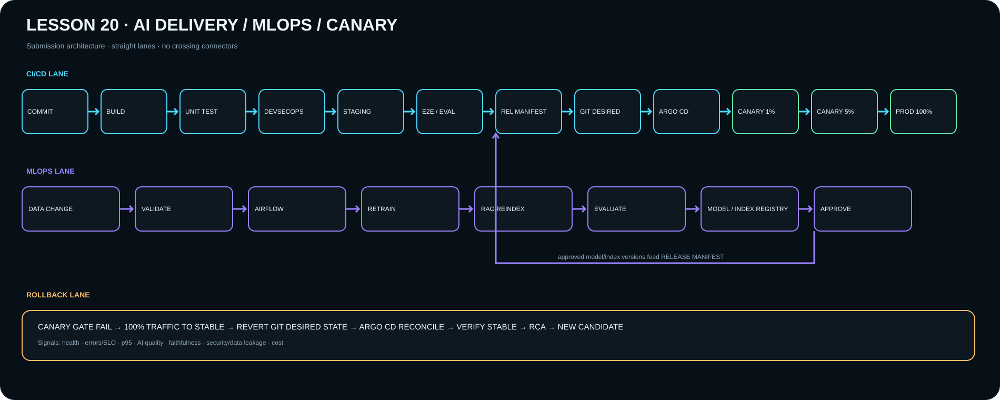

Homework 20 · submission package
IaC + CI/CD + MLOps + Canary Release
Проект сдачи связывает immutable app image с Model Registry и RAG index, использует GitOps/Argo CD и progressive Canary 1% → 5% → 100% с автоматическим rollback contract.

Критерии OTUS
- Model Registry ↔ application release
- Tests + Canary/Blue-Green
- Минимум ручных действий
Submission status
Архитектурный пакет подготовлен. Runtime evidence может быть добавлен из DZ18/DZ19, но исходное задание требует схему и текстовое описание.